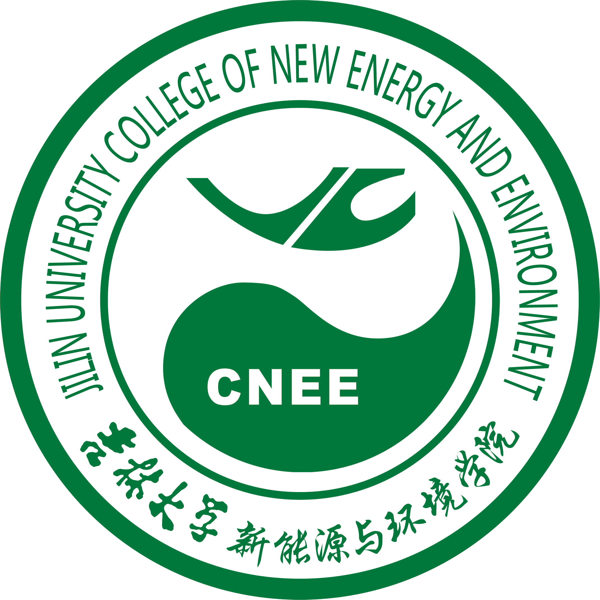
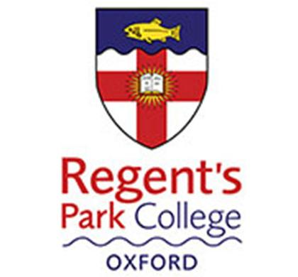
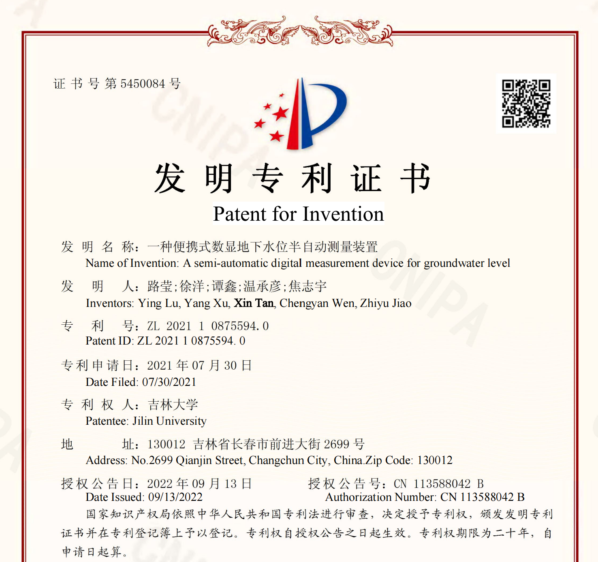

My name is Xin Tan (21 y/o), currently a final-year undergraduate at
Jilin University,
and will be pursuing master degree of Computer Science in America this year after September.
I'm now actively looking for an intern position that required Coding/Data Anaylsis skills or Engineering/Interdisciplinary background.
Comparing to salary, I care more about an opportunity to get hands-on experiences in the real industry.
So I'm open to any fields possible and can work anytime anywhere between March and September. Please contact me for further talks!
⚡ Skill Sets
- Languages: Cantonese (Native), Mandarin (Native), English (TOEFL 108, IELTS 7.5), French (Elementary).
- Computer Languages: R, C, Java, Python, MATLAB, (SQL, HTML + CSS, LaTeX)
- Tools/IDE: RStudio, Pycharm, Spyder, Visual Studio, Eclipse, MySQL, SPSS, AutoCAD, Origin, ArcGIS
You can scroll down in this section.👇
-
[2023/02/15] MS in Computer Science offer from George Washington University!
-
[2023/02/03] MS in Computer Science offer from NC State University!
-
[2023/01/24] Group trip with my bros in Hong Kong during Spring Festivsl!
-
[2022/11/25] First internship offer from SHUWEI (Nanshan, Shenzhen) during winter vacation.
-
[2020/11/26] .
-
[2022/10/01] Finished my 3-month research at Dal, flying back to Guangzhou and today is my birthday!!! 21 years old now.
-
[2022/07/01] 16+ hours flight from Canton to Halifax, Happy Canada Day!!!
|
College of Computer Science and Technology
B.S. in Computer Science and Technology | Sep. 2021 - Jul. 2023
- Main courses: Advanced Language Programming, Operating System, Java Object-Oriented Programming, Computer Networks, Data Structure, Principle of Computer Organization, Web Design, Database Management, Computer Graphics, etc.
|

|
|
College of New Energy and Environment
B.Eng. in Environment Engineering | Sep. 2019 - Jul. 2023
- Main courses: Geostatistics, Hydraulics, Engineering Mechanics, Matlab Programming, Python Data Analysis and Visualization Case Practice, Probability and Statistics, University Physics, Calculus, etc.
|

|
|
Regent’s Park College
Exchange Student, Oxford Prospect Programme | Jan.2020 – Feb.2020
- Lectures include: Statistical Machine Learning, Modelling Neurons, The Language of Logic, Fluid Dynamics, etc.
- Best Presentation Award (4/30)
|

|
|
High School Diploma, Science | Sep. 2016 - Jul. 2019
- Activities and Societies: Member of School Literature Society & Calligraphy Society.
|
|
|

|
A Semi-automatic Digital Measurement Device for Groundwater Level
Ying Lu, Yang Xu, Xin Tan, Chengyan Wen, Zhiyu Jiao
Patent ID: ZL 2021 1 0875594. 0
Filed 07/30/2021 - Issued 09/13/2022
|
Scroll down for more information 👇
Data Intern | SHUWEI
(Nanshan, Shenzhen) Dec.2022 – Feb.2023
SHUWEI is an IT company locates in Shenzhen Technology Park, focuses on using AI and big data technologies to develop digital products.
- Work with SQL to process urban data sets covering transportation, GDP, consumption capacity, etc.
- Conduct statistical analysis on DataArts Studio cloud platform that helps with location selection of chain stores.
|
|
|
(Halifax, Canada) Jul.2022–Oct.2022
Project: Data Analytics for Clean Water Technologies
- Worked in Rstudio to clean and analyze extensive historical water quality data collected from
local wastewater plants, compared different indexes to study their effects on the plants’ performances.
- Helped Ph.D. fellows with data visualization using ggplot2 for finalizing drinking water treatment based research papers.
- Built a new web app dashboard with R Shiny and HTML for various water treatment focused projects to update the current data hub.
|
|
|
(Raleigh, USA) Jan.2022–Feb.2022
Project: Netflix Prize Movie Ratings Prediction
- Used Collaborative Filtering as baseline to predict the rating a user will give from the movies
that user has rated in the past.
- Rating datasets collected from randomly-chosen, anonymous Netflix customers over 17 thousand movie titles.
|
|
|
(Changchun, China) Jan.2022–Feb.2022
Project: Intelligence-control Software Development for Sandstone-type Uranium Mining
- Simulated 3D stratum in GMS and GOCAD based on Bayesian estimation to show the spatial distribution
characteristic of both rock mass and ore body.
- Used well logging data collected by mining company to develop LSTM model for lithology identification
and ore grade prediction in deep formations.
|
|
Scroll down for more information 👇
Miscellaneous ⚽
-
Friends 👫(Ordered by Alphabets)
-
Sports: Tandem Skydiving (13500ft in Montreal, Canada), Skateboarding (3 years), Snowboarding 🏂(2 years),
Swimming 🏊(The 3rd place holder in JLU Freshman Cup of women’s 100m backstroke), Surfing 🏄(Beginner).
-
Games: Pearls Before Swine
Last update: Mar. 4th, 2023